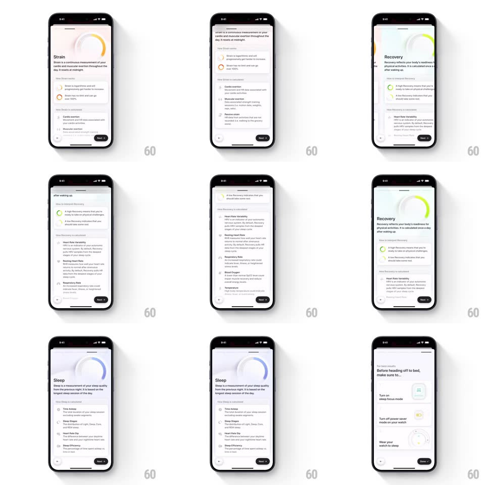

Media
Frame-by-frame

Rebuild this animation 1:1: Bevel's onboarding - a horizontal slide deck where each feature page draws its own colored progress ring and staggers in explainer cards.

Rebuild this animation 1:1: Bevel's onboarding - a horizontal slide deck where each feature page draws its own colored progress ring and staggers in explainer cards.
## Integration
Integration: stack-agnostic spec - springs given as stiffness/damping, timed motions as duration + curve; map every value to your framework and animation library of choice.
## Scene
"Welcome to Bevel" intro page with a Get started button, then paged feature explainers: Strain (orange ring), Recovery (green ring), Sleep (blue ring), and a final pre-bed checklist ("Before heading off to bed, make sure to..." with Done). Each page has a large ring graphic at top, a title, a definition paragraph, and icon-led explainer rows.
## Motion spec
Pattern: paged deck with drawing rings and staggered rows.
- Page transitions are 1:1 swipe-tracked; on release, snap with spring ~340/26. Page indicator dots update with the snap.
- On each page's first appearance: the ring at top draws from 0 to its arc (~75% of the circle, stroke-dash animation, 900ms, ease-in-out) in the page's color; the title and paragraph fade up (translateY 12px to 0, 300ms) while the ring draws.
- Explainer rows stagger in after the paragraph: icon pops (scale 0.5 to 1, spring ~440/22) and text slides right-to-left, 90ms apart per row.
- The bottom button ("Next" / "Done") stays pinned; only content scrolls/pages.
- Checklist page: each check row slides up (translateY 16px, 250ms, 80ms stagger) with its toggle switching on with a green fill sweep (150ms).
- Revisiting a page replays only the ring draw, not the row staggers.
## Calibration
- Ring colors are page identity: Strain orange, Recovery green, Sleep blue - never reuse across pages.
- Keep the ring drawing under 1s so paging never feels blocked.
## Reduced motion
Rings render complete; rows fade without stagger.
## Don't miss
- The ring is progress-styled (rounded caps, thick stroke), not a full circle chart.
- Definition paragraph is the only long text - rows are short icon + one-liner pairs.